Die Antwort ist "Ja" 
Hintergrund
Denn diese Karte wird zwischen Blumen platziert. Ich glaube, sie schreiben etwas Romantisches darauf und den Grund für das Schenken dieser Blumen. Aber das ist keine einfache Karte. Ich möchte von vorne beginnen und Ihnen erzählen, wie es für mich war.
Das alles passierte an meinem Geburtstag, als wir uns zum ersten Mal trafen. Ich mochte dich, aber du wolltest nicht mit mir reden oder kommunizieren. Ich habe versucht, dich über Instagram anzusprechen, aber als Antwort bekam ich nur Folgendes:
⭣
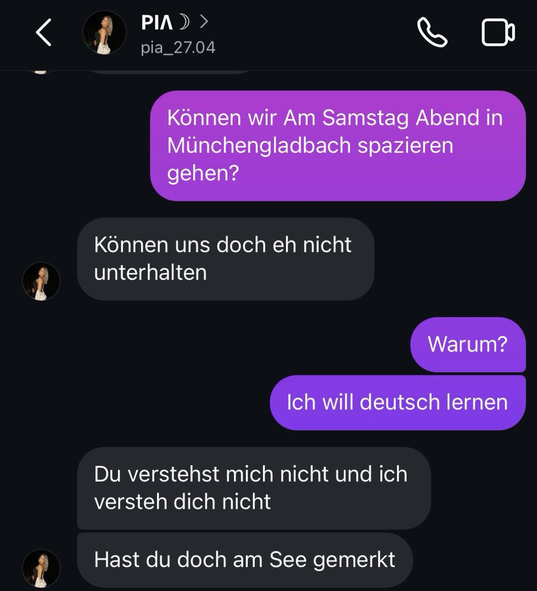
Ich war etwas verärgert und versuchte weiterzumachen, vielleicht klappte es ja. Aber du warst wie eine Mauer, wolltest mich nicht verstehen oder mir entgegenkommen. Ich beschloss, es noch einmal zu versuchen, aber es funktionierte nicht. Also beschloss ich, dich in Ruhe zu lassen, um dich nicht zu verärgern oder einzumischen und damit es später nicht noch schlimmer wird. Ich beschloss, leise zu verschwinden und „unsichtbar“ zu werden.
Doch dann bekam ich eines Tages eine SMS von dir und in mir machte es Klick. Ich war so glücklich, diese SMS von dir zu sehen.
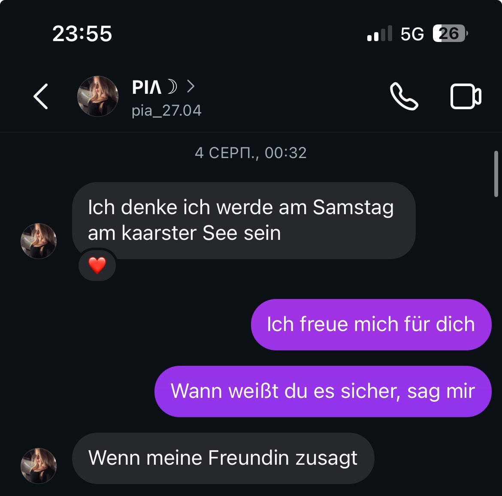
Ich habe mich noch nie so sehr auf das Wochenende gefreut wie an diesem Tag.
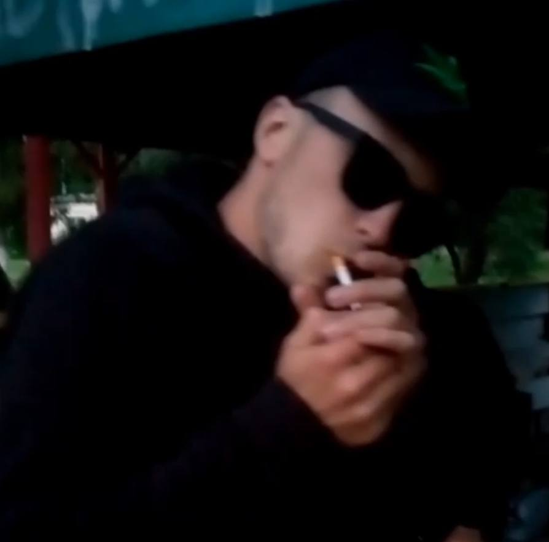
Nach diesem Wochenende fühlte ich mich wie neugeboren und beschloss, noch einmal mit dir zu reden. Und es gelang mir, und ich war so glücklich, dass ich, auch wenn ich es nicht zeigte, vor Freude schreien wollte. Ich wollte die Zeit anhalten und diesen Moment in meinem Leben immer wieder erleben. Aber die Dinge werden nie so sein, wie wir es uns wünschen, und genau das ist passiert. Ich habe es wieder geschafft:
⭣
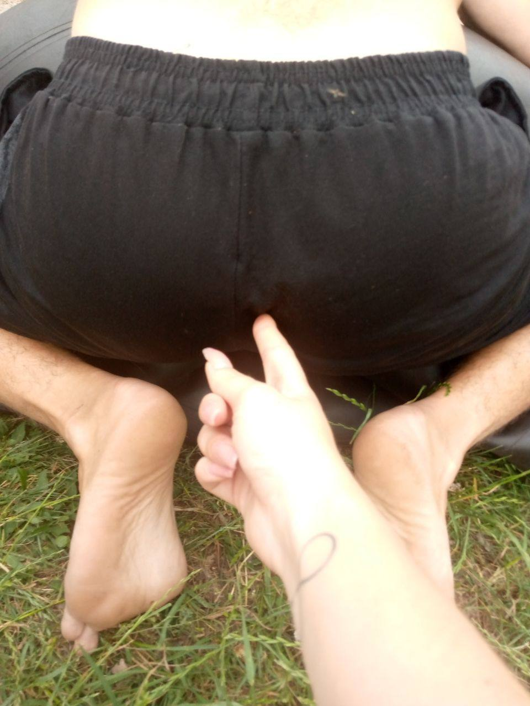
Ich habe deine SMS bekommen, was mich sehr aufgeregt hat, aber ich hatte keine andere Wahl und wollte unbedingt dein Freund sein, obwohl das nicht Teil meiner Pläne war. Trotzdem wollte ich dich besser kennenlernen, um zu wissen, was als Nächstes zu tun ist.
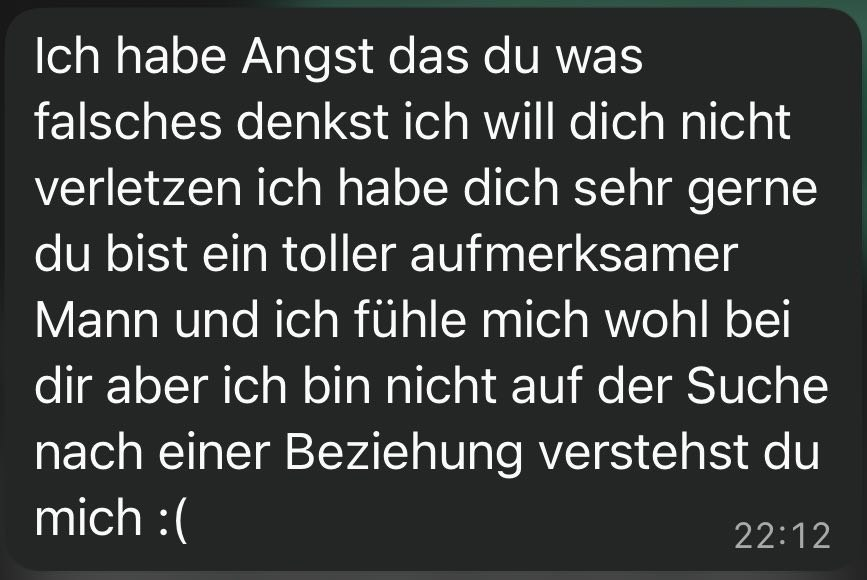
Ich weiß nicht, wie ich es dir richtig erklären soll, aber ich werde es versuchen. Denn ich wollte mehr Zeit mit dir verbringen, dich als Person kennenlernen. Ich kann nicht sagen, dass ich eine Beziehung wollte, aber ich kann es auch nicht leugnen, weil ich dich nicht kenne. Ich wollte einfach mehr kommunizieren, Zeit miteinander verbringen, Zeit mit dir verbringen, dich so gut wie möglich zufriedenstellen, dich glücklich und zufrieden machen. Zumindest versuchen. Ich hoffe, du verstehst, was ich damit meinte 🙏. Ja, ich mochte dich als Mädchen und wollte dir zeigen, was ich für dich tun kann. Aber das kann ich nicht, du lässt mich nicht, und ich glaube, das wirst du nie tun, besonders nach dem, was ich dir jetzt in diesem Brief schreibe. Ich glaube, du hast gemerkt, dass ich dich mag, und aus irgendeinem Grund, wahrscheinlich gerade deshalb, willst du nicht mit mir kommunizieren. Aber ich respektiere jeden Menschen und seine Entscheidungen. Deshalb werde ich nichts tun, was du nicht willst. Wir wollten dich wirklich bei uns in der Firma haben. Ich wollte dir unbedingt etwas mehr Spaß machen. Und nachdem du mir von deinen vergangenen Beziehungen erzählt hast, dachte ich, du wärst verschlossen und hättest Angst, jemandem zu vertrauen, oder vielleicht wolltest du einfach nichts❌. Aber ich wollte dir unbedingt zeigen, dass jeder anders ist und du einfach noch nie jemanden getroffen hast, der bereit ist, so viel für dich zu tun. Ich glaube, dir wurde nicht gezeigt, wie sehr man jemanden schätzen und wie viel man für ihn tun kann. Ich wollte es dir unbedingt zeigen, aber ...
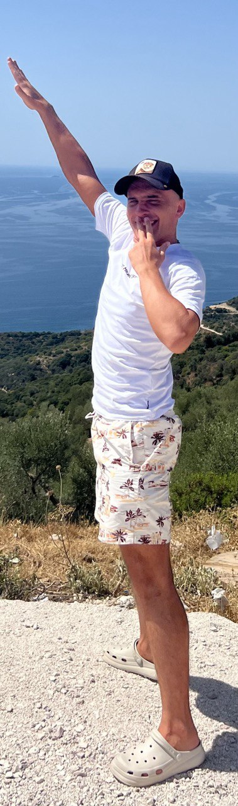
Die Hauptsache bist jetzt du
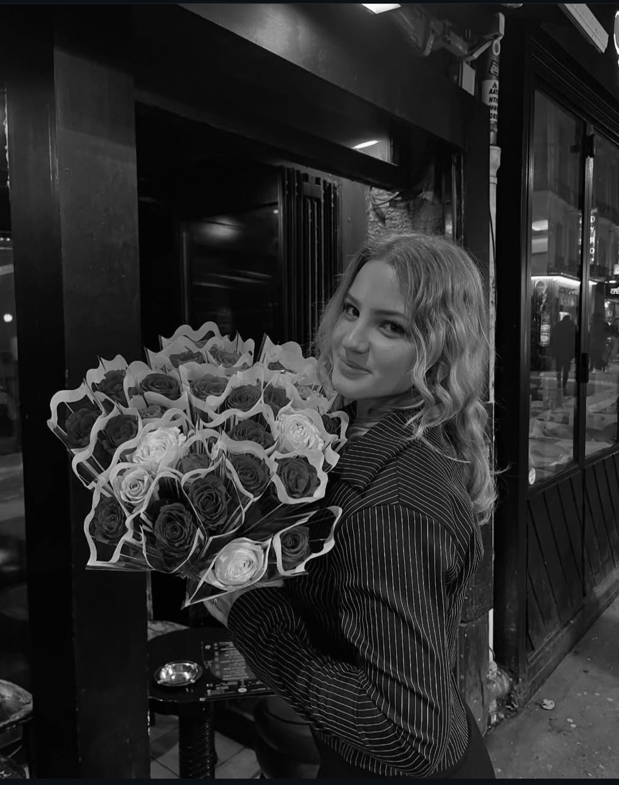
Wenn Sie sich mit meinen Augen sehen könnten, wären Sie, glaube ich, vom Ergebnis schockiert.
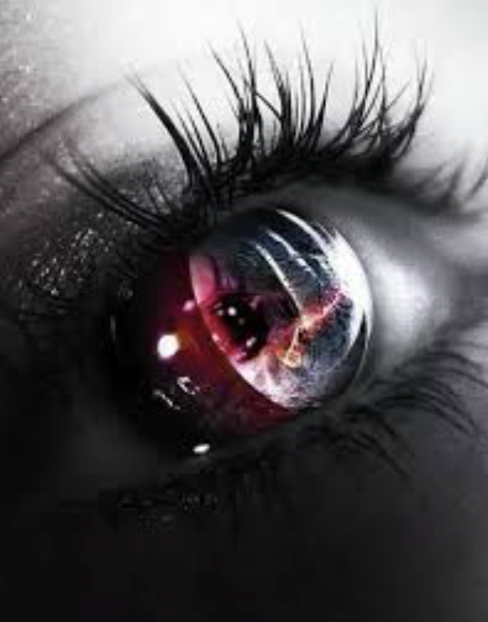
Ich möchte mit der banalsten Sache beginnen: Du bist wunderschön.
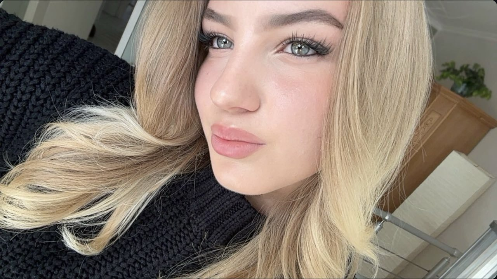
Deine Augen sind etwas Besonderes. Sie leuchten so hell, bläulich-grün. Sie wirken streng, doch sie ziehen an und locken. Sie leuchten immer den Weg, und du bist schon von weitem sichtbar. Mit diesen Augen manipulierst du die Herzen der Menschen. Ich ertrinke in deinen Augen.
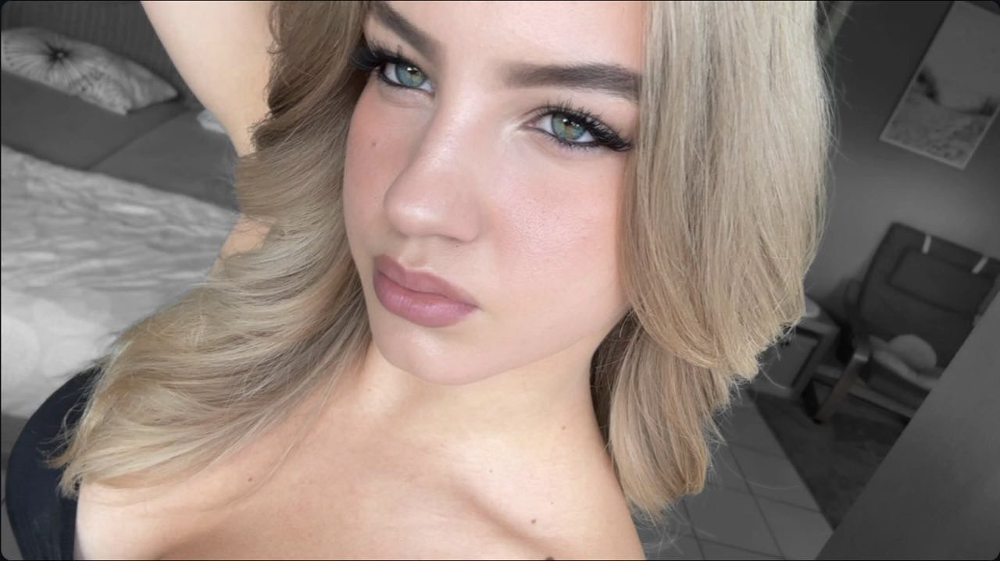
Ich kann nicht für meine Lippen sprechen. Normalerweise glaube ich, dass die Leute erst darüber reden, nachdem sie sie probiert haben, hahaha. Aber deine sind weder groß noch klein. Sie sehen weich und leicht aus, wie eine Wolke. Es könnte unheimlich sein, denn ich glaube, wenn man sie berührt, schmelzen sie wie Zuckerwatte. Sie sehen so zart aus wie Rosenblätter.
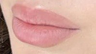
Du bist echt cool. Du bist sportlich, hast ein Ziel und arbeitest darauf hin. Du bist mit vollem Einsatz bei der Arbeit, was super ist. Du bist ein netter Mensch, und obwohl ich dich nicht kenne, kann ich das bestätigen. Du bist sehr mutig und hast vor nichts Angst. Du bist ein sehr starkes Mädchen.
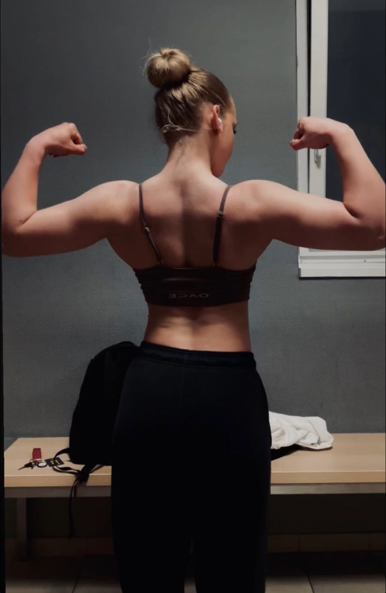 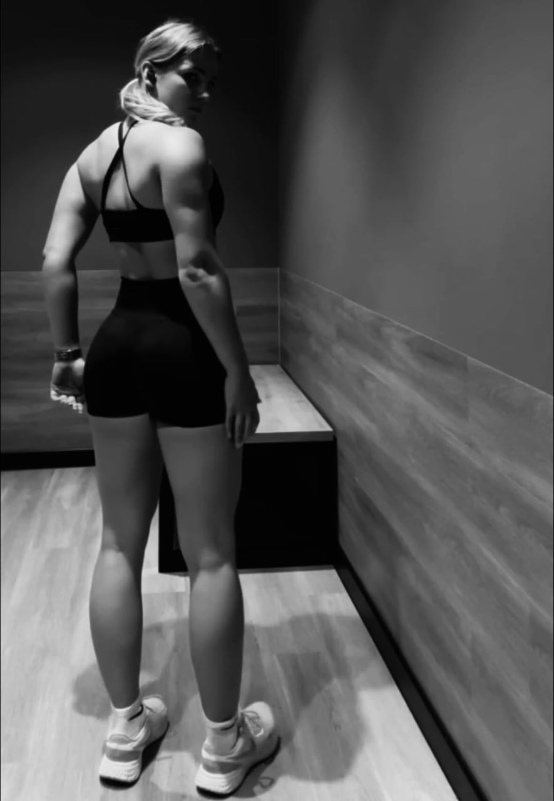 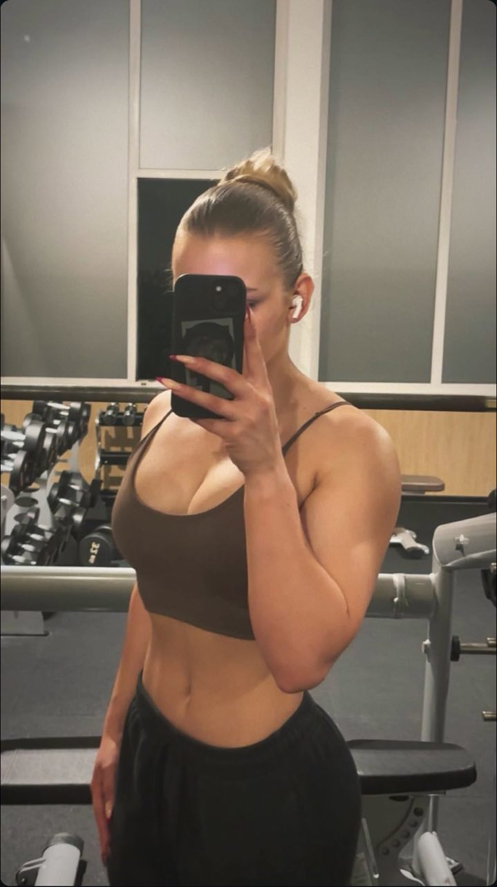 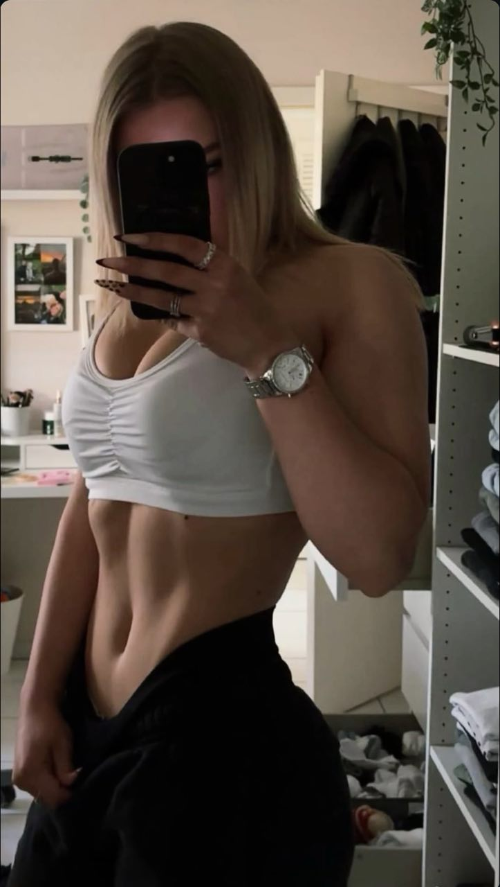
Dein Körper ist wunderschön und durchtrainiert. Ich rede nicht gern über meinen Körper, es ist mir peinlich. Ich könnte noch viel mehr erzählen, aber ich glaube, du verstehst mich vielleicht falsch. Deshalb erzähle ich es dir später, wenn ich mir ganz sicher bin, dass du es verstehst.
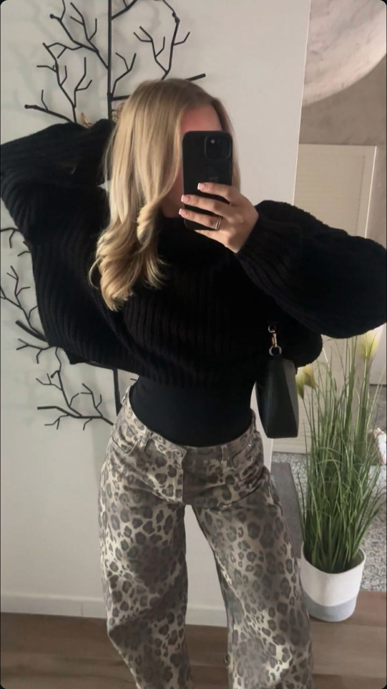
Du siehst so wunderschön aus in diesem Kleid
Und ich möchte dich jetzt umarmen,
Und Tage und Nächte in Jahre verwandeln,
Du bist so unglaublich wunderschön.
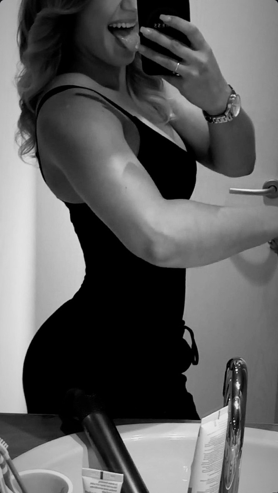
Du hast das schönste Lächeln der Welt. Es ist bezaubernd. Es ist charmant, zart und ich möchte es einfach nur ansehen, deine Lippen, deine Augen, dich ganz und gar, wie eine Skulptur. Ich kann nicht aufhören, dich anzuschauen.
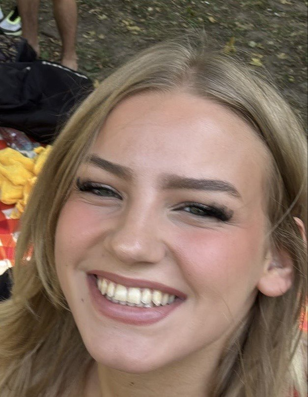
Was ich zusammenfassen möchte
Du musst dich mit meinen Augen sehen, um zu verstehen, was ich sagen wollte, denn das ist nur ein kleiner Teil dessen, was ich in dir sehe. Ich möchte dich gerne besser kennenlernen, mit dir reden. Ich rechne mit nichts, obwohl ich es ehrlich gesagt wirklich möchte. Aber wie gesagt, ich werde es dir durch meine Taten zeigen, wenn du es mir erlaubst, natürlich. Aber ich will nichts überstürzen, ich möchte dich erst einmal besser kennenlernen. Das Souvenir, das ich dir geschenkt habe, ist nicht besonders gut, ich kenne dich einfach nicht und wusste nicht, was ich kaufen sollte. Ein Kühlschrankmagnet ist einfach Mist. Du arbeitest viel, und ich denke, mein Souvenir würde dir bei der Arbeit guttun.
Ich kenne den wahren Grund nicht, warum du nicht ausgehen und Zeit mit uns verbringen willst, aber ich glaube nicht, dass es an der Arbeit liegt. Sei nicht böse oder beleidigt; das sind nur meine Vermutungen. Aber wir würden uns sehr freuen, dich bei uns zu sehen, uns in schwierigen Situationen zu helfen und mit dir Spaß zu haben.
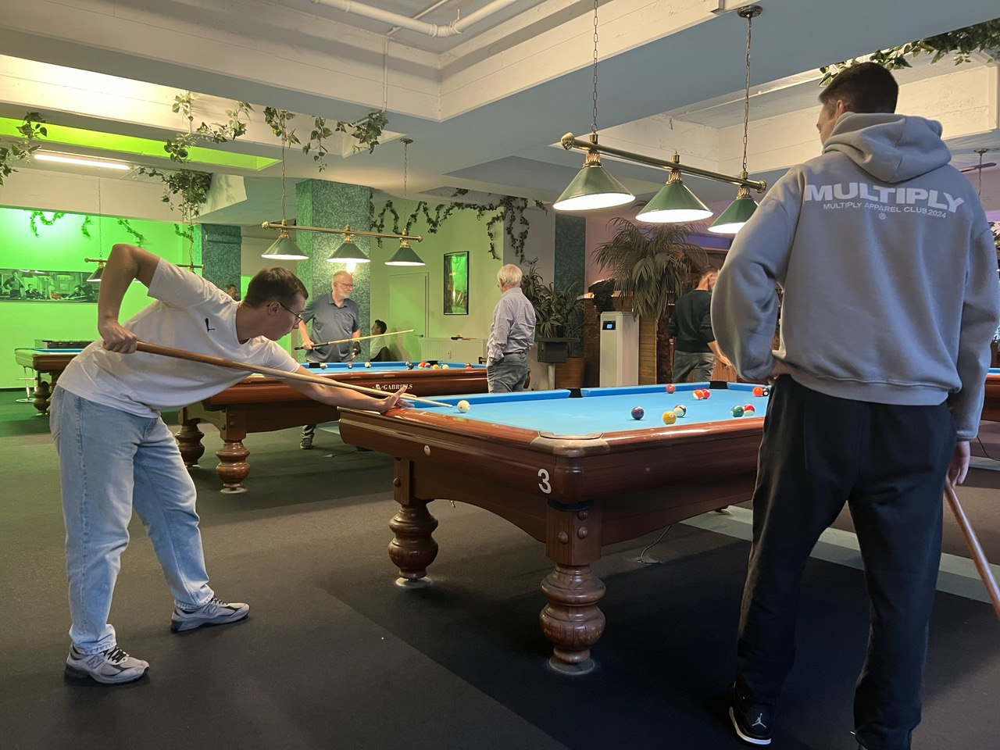 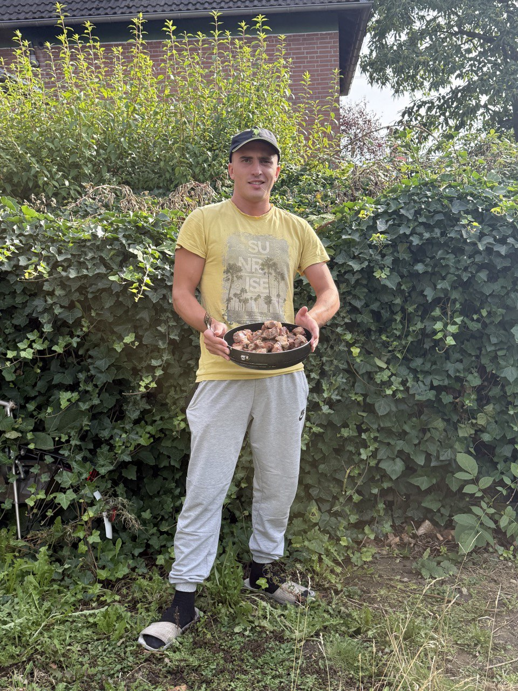
Ich würde gerne viel sagen und argumentieren, aber ich möchte alles tun und beweisen. Dich zu bitten, mir eine Chance zu geben – nun, das fände ich unhöflich. Ich sage dir, du sollst darüber nachdenken, wenn du Zeit hast. Aber du sollst wissen, dass ich dir immer helfen und dich unterstützen werde, zu jeder Tageszeit. Wir warten auf dich, denn wir sind noch zu viert und wollen eine neue Gruppe gründen, in der wir immer Spaß haben. Ich bin wirklich neugierig. Du wolltest uns nach dem Volleyball besuchen, aber in meinen Ferien ist etwas passiert, und das war’s. Du willst nicht mit uns abhängen. Das ist schade. Um dir Zeit zu sparen, und nicht unsere, sag mir einfach deine Antwort: Willst du mit uns abhängen? Bitte sag es mir so, wie es ist, sag einfach die Wahrheit. „Besser eine bittere Wahrheit als eine süße Lüge.“ Aber wisse: Wir warten immer auf dich.
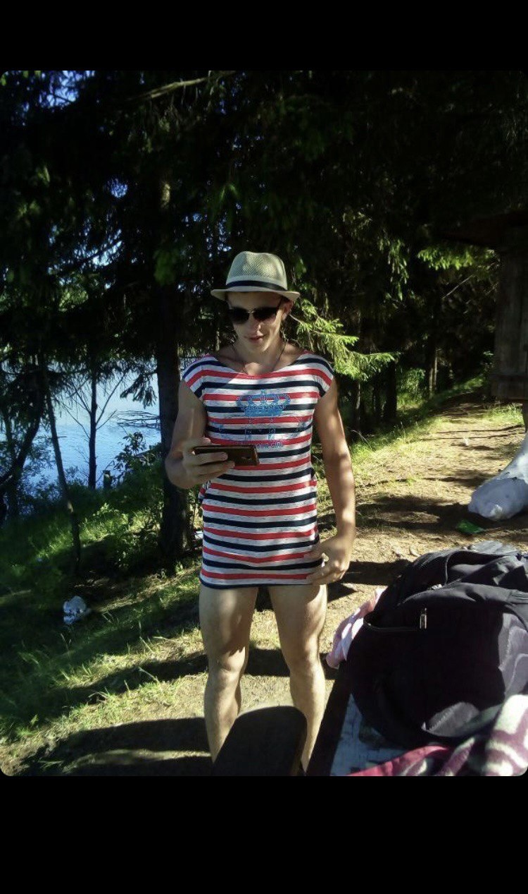 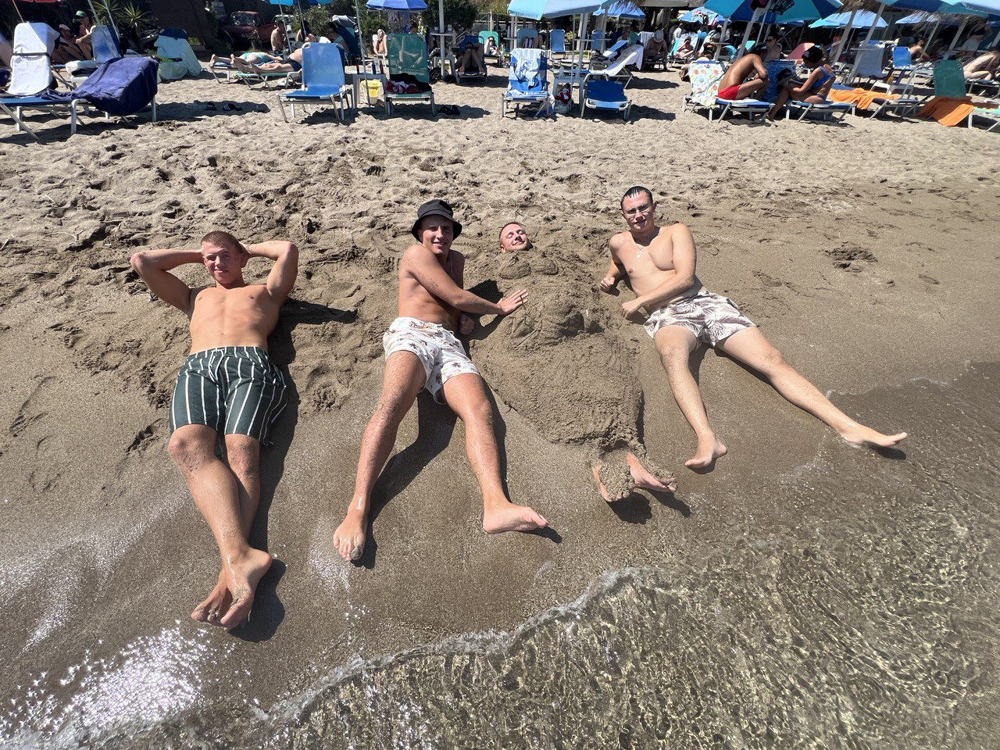
Nachtrag: Ein Freund meinte, das sei keine gute Idee, aber ich habe es nur getan, um dich zum Lächeln zu bringen. Ich hoffe, du hast beim Lesen noch mehr gelächelt und dich darüber gefreut, wenn auch nur ein bisschen. Ich glaube, so etwas hast du noch nie bekommen. Wir leben im 21. Jahrhundert, im Zeitalter der digitalen Technologie, und nur so funktioniert es. Ich hoffe wirklich, du hast die Zeit mit uns und mit mir genossen. Und letztendlich ist es schön, das zu bekommen. Ich erinnere dich daran: Lächle öfter. Ich habe dir gesagt, dein Lächeln ist schön und steht dir. Vergiss nicht zu lächeln. In meinen Augen bist du die weiße Rose, die zwischen all den stumpfen roten hervorsticht. Genau wie in einem Blumenstrauß.
Lass mich dich besser kennenlernen 🙏🥺
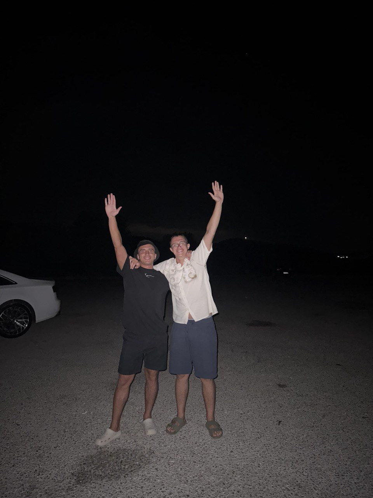
Gott, ich weiß nicht, was ich sagen soll, mir fehlen einfach die Worte, um zu beschreiben, wie schön du bist. Ich möchte vor lauter Schönheit schreien. Ich bin sprachlos, wenn ich dich sehe, ich vergesse die Worte, ich vergesse sogar, wie man spricht und was es bedeutet 😍. Vergib mir diese Worte, aber ich möchte dir wirklich zeigen, was es bedeutet, den Menschen zu lieben, für den ich verrückt bin. Ich möchte der Mensch in deinem Leben bleiben, von dem du sagen würdest: „So wie er mich geliebt hat, hat mich noch nie jemand geliebt und wird es auch nie tun.“ Ich möchte nur, dass du das weißt, und ich möchte es dir wirklich beweisen. Vergib mir, vergib mir wirklich diese Worte, und ich hoffe, du fühlst dich nicht beleidigt und diese Worte tun dir nichts Böses. Bleib, wer du bist. Und ich flehe dich an, entferne dich nicht von mir, bitte, ich flehe dich an 🙏.
img src="pictures/pia_wunderschon1.jpg" width="500"